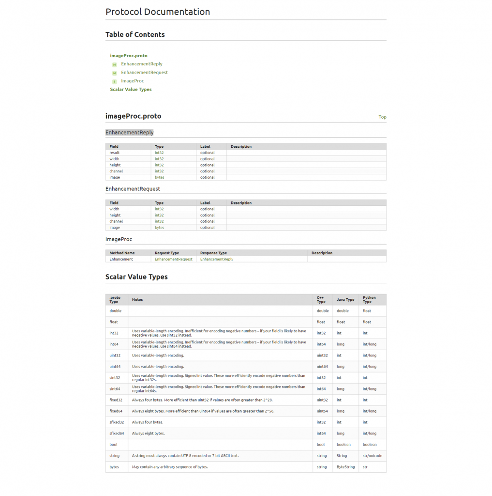

Problem
gRPCは非常に良い技術です。 protoファイルから、クライアント側とサーバー側のコードを自動で生成してくれます。 つまり、protoファイルそのものが仕様書になるわけです。 でも、その仕様書からドキュメントを作成できたら、さらに良くないですか? コーディングをしているエンジニアの大半は、ドキュメント化が苦手ではないでしょうか？(偏見) ソースにコメントを書くのは好きですけど、WordまたはExcelで、見栄えの良いドキュメントを作るのはしんどいです。 ましてや、ソースにある、メソッド名やクラス名を、もう一度書くとか苦行です。 そんな苦行から私たちを解放してくれるのが、protoc-gen-docです。
Solution
githubでの説明が、かなり端折っていてげんなりしますが、実行は簡単です。 protoc-gen-docからWindows版がリリースされていますので、ダウンロードして、展開します。 次に、Protocol Buffersからprotoc.exeを入手します。 または、NugetでgRPC toolsを入手していれば、
- %USERPROFILE%.nuget\packages\grpc.tools\X.Y.Z\tools\windows_x64\protoc.exe
- %USERPROFILE%.nuget\packages\grpc.tools\X.Y.Z\tools\windows_x86\protoc.exe
が展開されていますので、それを利用します。 X.Y.Zはバージョン部分ですので、入手時期によって、変わります。 試しに、.NETでgRPCを試してみる 第1回で使った、protoファイルからドキュメントを生成してみます。 そして、下記のバッチを作成し、PLUGIN_PROTOC_GEN_DOCやPROTOC等を適切な場所に変更します。 [code lang=”batch”] set PROTOC=%USERPROFILE%\.nuget\packages\grpc.tools\1.2.0\tools\windows_x64\protoc.exe set OUT_FILENAME=index.html set OUT_DIR=doc set PLUGIN_PROTOC_GEN_DOC=%USERPROFILE%\Downloads\protoc-gen-doc-v0.9-win32\protoc-gen-doc.exe set PROTOC_FILE=imageProc.proto mkdir %OUT_DIR% “%PROTOC%” –doc_out=html,%OUT_FILENAME%:%OUT_DIR% %PROTOC_FILE% –plugin=protoc-gen-doc=”%PLUGIN_PROTOC_GEN_DOC%” [/code] PROTO_FILEの場所も変更します。上のバッチファイルは、PROTO_FILEがある場所をカレントディレクトリにしていますので、適宜変更してください。 実行すると、カレントディレクトリにdoc\index.htmlが作成されます。 こんな感じです。

基本英語なので、ドキュメント生成時点から、日本語にしたい場合は、ソースコードから変更する必要がありそうです。
{kind=link}